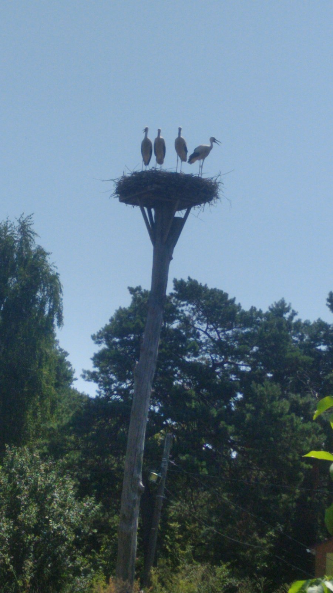
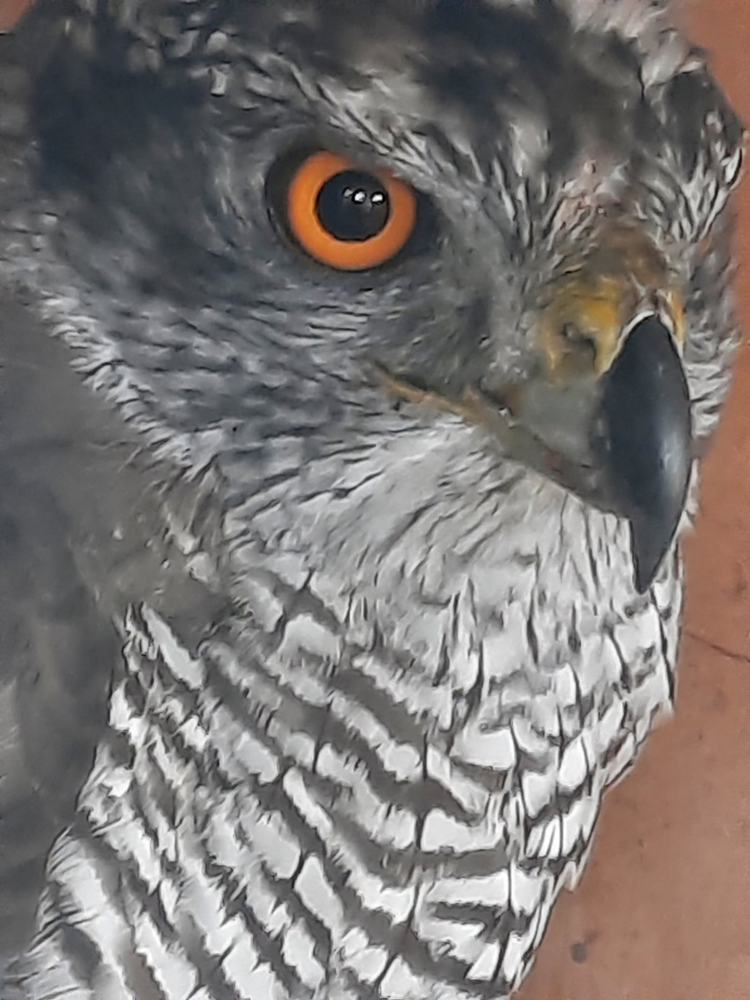
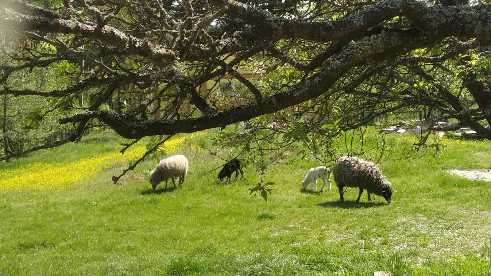

Привіт спільното!
Напевно багато хто з вас має друзів менших: котики, песики, попуги,
хом'ячки, рибки і т.д. Хочу трохи розповісти про своїх менших друзів.
У мене також є киці (4), є песики (2), але є і
єксклюзив!
Знайомтесь:
-
Лелеки
Декілька років тому ми поставили дубового стовпа, зплели гніздо та стали очикувати. І ось звершилося! Вперше прилетів лелека одинак, він то залишався, то летів кудись на 2-3 доби, потім знов повертався. Так відбувалось майже 4 роки. А в 2021році оселилася пара.
В перші два роки вони привели по 2 лелеченят. У минулому році привело троє лелеченят. А цьогоріч четверо лелеченят!!! Вони вже виросли і покинули гніздо ще 11 серпня. Вже сумую... Зараз вони "у відпусці" десь напівдорозі, летять на зимовку до теплих країв. Мають повернутися на прикінці березня.
Вже дорослі лелеченята готуються покинути гніздо
Мама лелека в останнє годує своїх вже дорослих 4 пташенят.P.S. ви ж знаєте що лелеки то українці, бо народжені в Україні! :)
-
Яструб великий
Чую гвалт на подвір'ї, півні кричать, курки кричать. Біжу на звук, за мною кицька. Прибігли до курника, а там яструб пробив сітку і намагався напасти на птахів. В житті б до нього не наблизилась би, але кицька, ця мала кицька стала з інтересом наступати на нього. Яструб такої наглості не очікував і почав потроху відступати назад, та невтримався і впав на спину. Тут вже я його і зловила.
Зачинила в клітку. У себе випускати не хочу, бо повернеться і знов нападе. Дзвоню в різні організаціїї, щоб передати їм.
Там питають:
-Він хворий?
-Ні.
-Він покалічений?
-Ні.
-То відпускайте його, якби він був чи хворий, чи покалічений, чи з Червоної книги, тоді ми би його забрали. А так випускайте подалі, кілометрів за 20, не повинен повернутися.Але ж 20км для нього то нічого, бо його територія від 10км до 50км (залежить від наявності їжі). Тож вирішили вивезти подалі. В організації сказали, що в цю пору року, якщо у нього і були пташенята, то вони вже виросли і вилетіли з гнізда, його ніхто не чекає. Зараз цей птах годує тільки сам себе.Таким чином притримали його у себе, поки знайшлась машина, яка їхали майже за 100км, там є ліси і річки, я впевнена що яструбу сподобалося на новому місті, тим паче що біля нас вже майже порізали всі ліси. Він жив у нас 2 тижні. Назвали його Неллі-Нельсон (це окрема історія).
Яструб великий
Яструб вечеряє -
Мої друзі менші - вівці
Того року було у мене 2 вівці і 2 баранчики. Так сталося, що 2 вівці залишилось на зиму, а весною я зрозуміла, що одна з них кітна (носить ягня). У вівць, до останього моменту це не видно, а так як я взагалі не мала такого досвіду, то для мене це було неочікувано і шок. Начитавшись вселяких статей, я зрозуміла, що є приблизно 2 тижні до того як народиться ягня. А так як вівці частіше народжують чи в ночі, чи під ранок то наступних 2 тижні, кожної ночі я тихенько приходила до неї, слухала чи все у порядку.
За 2 тижні таких спостерігань по ночах я абсолютно виснажилась і на 14 ніч не прийшла. В 7 годин ранку у мене стався якийсь "дзен" в голові, я чітко почула тихенький голос своєї вівці... через хвилину вже була біля неї, а в неї вже народилося ягнятко! Поки я оговталась від хвилі емоцій вона почала народжувати друге ягнятко, але друге, як би я не прийшла, напевно загинуло, бо народилося у рубашці і трохи захлинулося, але ми справилися і все закінчилося добре.
Мама з ягнятами та подружкою на пасовищі
Новонароджені ягнята з мамою